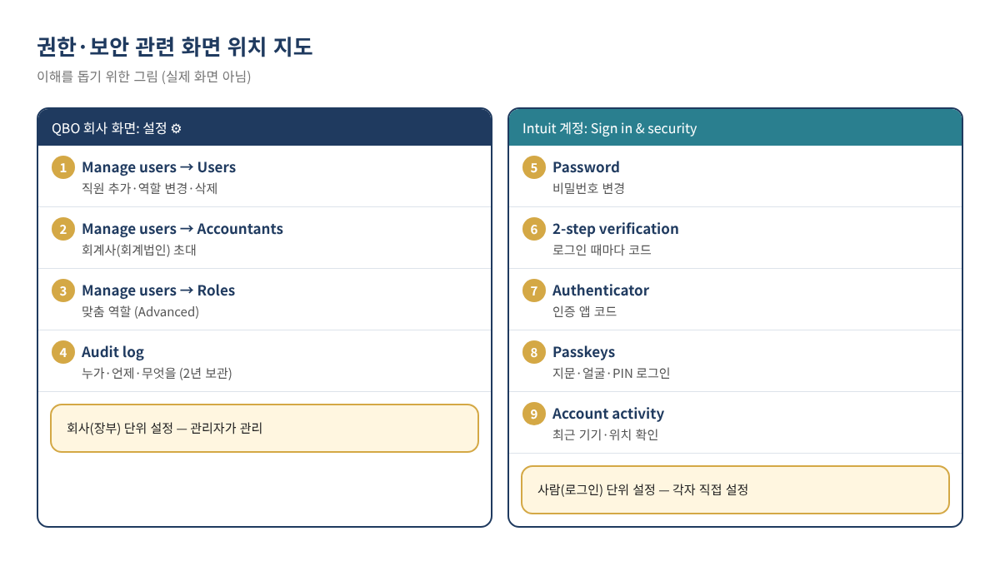
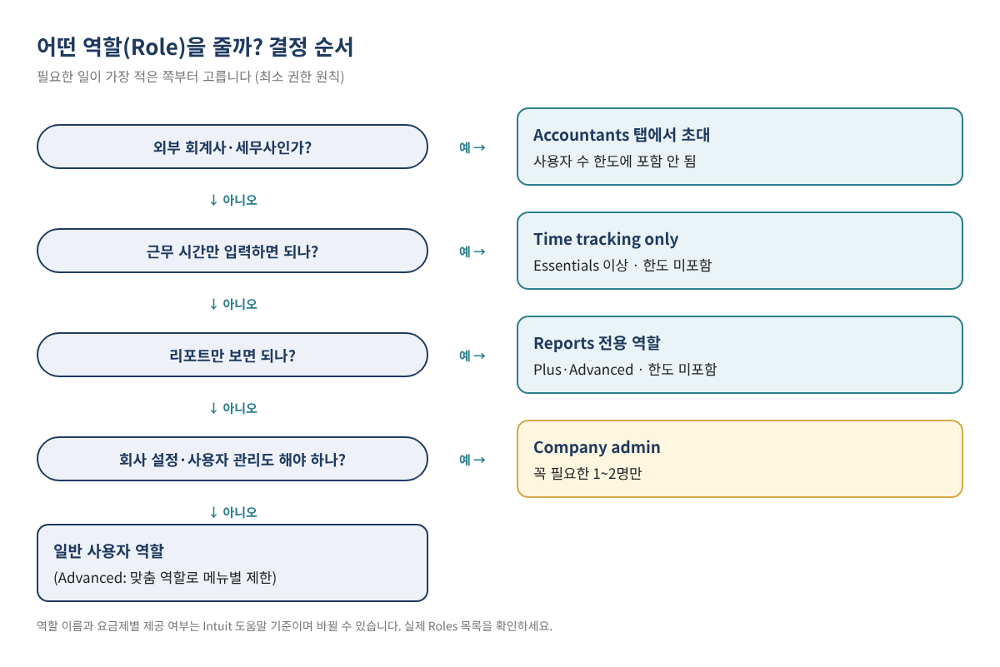
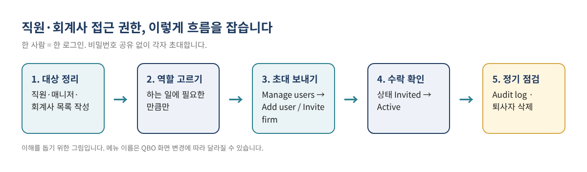
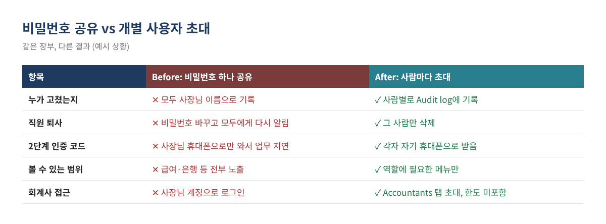

QuickBooks Online(QBO) 장부를 쓰다 보면 매니저가 인보이스를 보내야 하고, 파트타임 직원이 근무 시간을 입력해야 하고, 연말에는 회계사가 장부를 봐야 합니다. 이때 가장 흔한 방법이 사장님 아이디와 비밀번호를 그냥 알려 주는 것입니다. 당장은 편하지만, 누가 무엇을 고쳤는지 알 수 없고, 직원이 그만두면 비밀번호를 바꿔 모두에게 다시 알려야 하며, 급여와 은행 정보까지 전부 보이게 됩니다.
이 글에서는 QBO에서 사람마다 따로 로그인을 만들어 주는 방법(사용자 초대), 하는 일에 맞게 볼 수 있는 범위를 정하는 방법(역할·권한), 회계사를 사용자 수 한도와 상관없이 초대하는 방법, 그리고 Intuit 계정의 2단계 인증과 Audit log로 장부를 지키는 방법을 순서대로 정리합니다. 시리즈 첫 글 QuickBooks Online 기초 가이드에서 짧게 소개한 내용을 실제 설정 단계까지 자세히 다룹니다.
이런 분께 필요합니다 ☐ 직원이나 가족에게 사장님 QBO 비밀번호를 알려 준 적이 있는 분 ☐ 회계사에게 장부를 보여 줘야 하는데 사용자 수가 모자랄까 걱정되는 분 ☐ 직원이 그만둔 뒤 QBO 접근을 어떻게 끊어야 할지 모르는 분 ☐ 로그인할 때마다 오는 인증 코드 때문에 직원 업무가 막히는 분
권한과 보안 설정은 두 곳에 나뉘어 있습니다. 이 구분을 알면 메뉴를 찾느라 헤매는 시간이 크게 줄어듭니다.

팁 메뉴 위치는 QBO 화면 개편에 따라 자주 바뀝니다. 메뉴가 안 보이면 상단 검색창에 "Manage users" 또는 "Audit log"를 입력해 찾는 것이 가장 빠릅니다.
QBO는 요금제마다 넣을 수 있는 '유료(billable) 사용자' 수가 정해져 있습니다. 반면 회계사 사용자, 리포트 전용 사용자, 시간 기록 전용 사용자는 이 한도에 포함되지 않습니다. 아래 표는 Intuit 미국 도움말(사용 한도 안내)과 요금제 비교 페이지에서 확인한 내용입니다.
| 요금제 | 유료 사용자 | 회계사 사용자 | 시간 기록 전용 | 리포트 전용 |
|---|---|---|---|---|
| Simple Start | 1명 | 2명 | 제공 안 됨 | 제공 안 됨 |
| Essentials | 3명 | 2명 | 제한 없음 | 제공 안 됨 |
| Plus | 5명 | 2명 | 제한 없음 | 제한 없음 |
| Advanced | 25명 | 3명 | 제한 없음 | 제한 없음 |
표 1. 요금제별 사용자 한도 (Intuit 미국 도움말 기준, 2026년 11월 확인). 한도와 요금은 바뀔 수 있으니 가입 전 Intuit 요금제 페이지에서 현재 내용을 확인하세요.
예를 들어 Essentials를 쓰는 식당이라면 사장님, 매니저, 사무 직원 3명까지 유료 사용자로 넣을 수 있고, 홀 직원들은 시간 기록 전용으로 인원 제한 없이 추가할 수 있습니다. 회계사는 별도 회계사 자리(2명)를 쓰므로 유료 사용자 자리를 차지하지 않습니다.
사용자를 추가할 때는 Roles 드롭다운에서 역할을 고릅니다. 역할마다 열어 볼 수 있는 메뉴가 다르고, 선택하면 그 역할이 접근할 수 있는 기능 목록이 펼쳐져 확인할 수 있습니다. 원칙은 하나입니다. 그 사람이 하는 일에 꼭 필요한 범위까지만 줍니다.

| 이런 사람 | 고려할 역할 | 사용자 한도 | 메모 |
|---|---|---|---|
| 사장님 본인 | Primary admin | 포함 | 구독·결제와 사용자 관리의 최종 책임자 |
| 믿을 수 있는 공동 대표·총괄 매니저 | Company admin | 포함 | 설정과 사용자 관리까지 가능하므로 1~2명만 |
| 인보이스·지출을 입력하는 사무 직원 | 일반 사용자 역할 (Advanced는 맞춤 역할) | 포함 | 급여·은행 설정이 필요 없으면 범위를 좁힙니다 |
| 숫자만 확인하는 투자자·가족 | 리포트 전용 역할 | 미포함 | Plus·Advanced에서 제공 |
| 근무 시간만 입력하는 직원 | Time tracking only | 미포함 | Essentials 이상. 이 역할은 수정이 안 되어 바꾸려면 삭제 후 다시 추가 |
| 외부 회계사·세무사 | Accountants 탭에서 초대 | 미포함 | 회계사 도구로 장부 검토·수정 가능 |
표 2. 사람별 역할 선택 예시 (예시 값). 실제 역할 이름과 목록은 요금제와 화면 개편에 따라 다르므로 내 회사의 Roles 드롭다운에서 확인하세요.
QBO Advanced에서는 역할을 직접 만들 수 있습니다. 설정 ⚙ → Manage users → Roles 탭 → Add role에서 이름과 설명을 넣고, 영역별로 할 수 있는 일을 고른 뒤 저장합니다. Intuit 도움말에 따르면 판매(Sales), 지출(Expenses), 재고, 목록(Lists), 장부 정리(Bookkeeping), 회계(Accounting), 급여(Payroll), 리포트, 계정 관리 같은 영역마다 보기·만들기·수정·삭제·승인 수준으로 나눠 줄 수 있고, 판매는 Location(지점) 단위로도 제한할 수 있습니다. 여러 매장을 운영하면서 매장 매니저에게 자기 매장 판매만 보여 주고 싶을 때 유용합니다.

팁 회사 공용 이메일(예: office@...) 하나로 여러 사람이 로그인하게 만들면 비밀번호 공유와 똑같은 문제가 생깁니다. 사람마다 본인 이메일로 초대하세요.
회계사는 일반 사용자로 넣지 말고 회계사 전용 자리로 초대합니다. Intuit 도움말에 따르면 이렇게 초대한 회계사는 구독의 사용자 수 한도에 포함되지 않습니다. 초대는 Primary admin 또는 Company admin만 할 수 있습니다.
회계사 사용자는 장부를 검토하고 수정할 수 있는 회계사용 도구를 함께 받습니다. 연말에 회계사가 분류를 많이 고칠 수 있으므로, 수정 전후를 확인하고 싶다면 아래 Audit log를 활용합니다. 기존 데이터를 옮겨 오는 중이라면 QuickBooks Desktop에서 Online으로 옮기기 글도 함께 참고하세요.
권한을 잘 나눠도 비밀번호가 새면 소용이 없습니다. Intuit 계정에는 두 가지 보호 장치가 있습니다.
| 구분 | 언제 코드를 묻나 | 끌 수 있나 |
|---|---|---|
| 다중 인증 (MFA) | 처음 보는 기기나 낯선 환경에서 로그인할 때 이메일·휴대폰으로 일회용 코드 | 끌 수 없음 (기본 적용) |
| 2단계 인증 (2-step verification) | 켜 두면 어느 기기에서든 로그인할 때마다 코드 | 선택 사항 (직접 켜고 끔) |
표 3. MFA와 2단계 인증의 차이 (Intuit 계정 도움말 기준).
주의 계정에 등록된 휴대폰 번호를 바꾸면 2단계 인증이 자동으로 꺼집니다. 번호를 바꾼 뒤에는 새 번호로 다시 켜야 합니다. 2단계 인증을 끄면 인증 앱 설정도 함께 꺼집니다.
사람마다 따로 초대해야 하는 또 다른 이유가 여기 있습니다. 비밀번호를 공유하면 인증 코드가 사장님 휴대폰으로만 가서, 사장님이 바쁠 때 직원이 로그인하지 못합니다. 각자 계정이면 각자 휴대폰으로 코드를 받습니다.

은행 잔액이 안 맞을 때 누가 같은 거래를 두 번 넣었는지 찾는 데도 Audit log가 유용합니다. 자세한 방법은 중복 거래와 Reconcile 차이 찾기 글을 참고하세요.
가상의 베이커리 'Sunrise Bakery'(라스베이거스, QBO Plus 사용, 직원 9명)를 예로 들어 보겠습니다. 이전에는 사장님 계정 하나를 매니저와 사무 직원이 같이 썼습니다.
| 사람 (가상) | 하는 일 | 역할 | 유료 자리 사용 |
|---|---|---|---|
| 사장님 | 전체 관리, 결제 | Primary admin | 1 |
| 총괄 매니저 | 인보이스·지출 입력, 직원 시간 승인 | 일반 사용자 역할 | 1 |
| 파트타임 사무 직원 | Bill 입력, 영수증 첨부 | 일반 사용자 역할 (범위 좁게) | 1 |
| 공동 투자자 | 월별 손익만 확인 | 리포트 전용 역할 | 0 |
| 홀·주방 직원 5명 | 근무 시간 입력 | Time tracking only | 0 |
| 외부 회계사 | 분기 검토, 연말 조정 | Accountants 탭 초대 | 0 (회계사 자리 1/2) |
| 합계 | 유료 3/5 사용 |
표 4. 사용자 구성 예시 (예시 값, 가상 사업체).
이렇게 바꾸면 유료 자리 5개 중 3개만 쓰고도 10명이 넘는 사람이 각자 로그인하게 됩니다. 사장님은 모든 유료 사용자에게 2단계 인증을 켜 달라고 요청하고, 매달 한 번 Audit log를 사용자별로 걸러 이상한 변경이 없는지 확인합니다. 사무 직원이 그만두면 그날 Manage users에서 삭제하고, 그 직원이 입력했던 기록은 Audit log에 남아 있으므로 나중에 확인할 수 있습니다.
Simple Start·Essentials·Plus는 회계사 2명, Advanced는 3명까지입니다(Intuit 사용 한도 안내 기준). Intuit 도움말은 회계법인이 2곳보다 많이 필요하면 Advanced 업그레이드를 고려하라고 안내합니다.
역할을 고를 때 급여 접근이 없는 역할을 선택하면 됩니다. 메뉴별로 더 세밀하게 막아야 한다면 Advanced의 맞춤 역할에서 Payroll 영역을 제외할 수 있습니다.
아닙니다. 사용자를 삭제해도 그 사람이 입력한 거래는 장부에 남고, 작업 이력도 Audit log에서 계속 볼 수 있습니다.
2단계 인증은 각자의 Intuit 계정에서 켜는 선택 설정입니다. 회사 규칙으로 정해 두고 직원이 직접 켜도록 안내하세요. 기본 다중 인증(MFA)은 모든 계정에 적용되어 끌 수 없습니다.
Intuit 도움말 기준 Audit log 이벤트는 2년간 볼 수 있습니다. 오래 보관해야 하는 변경 내역은 주기적으로 리포트를 내보내 따로 보관하는 것이 안전합니다.
이 글은 일반적인 교육용 정보이며 세무·법률·재무 자문이 아닙니다. 예시의 사업체와 사람은 가상이며 수치는 설명을 위한 값입니다. QuickBooks Online의 화면, 메뉴 이름, 요금제 구성과 가격, 사용자 한도는 수시로 바뀌므로 실제 설정 전 현재 화면과 Intuit 공식 도움말을 확인하시기 바랍니다.
QuickBooks is a registered trademark of Intuit Inc.; not affiliated with or endorsed by Intuit.